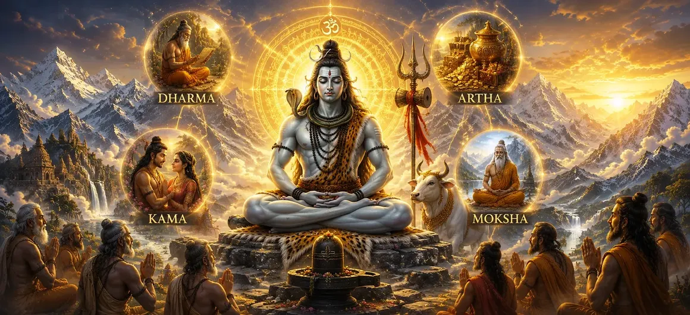

📖 Read the Sacred Shiva Purana Online • Har Har Mahadev 🔱
📖 পবিত্র শিব পুরাণ পাঠ করুন • হর হর মহাদেব 🔱

Chapter 5 → The Four Goals of Human Life
অধ্যায় ৫ → মানবজীবনের চারটি লক্ষ্য
After explaining the greatness of Lord Shiva, Suta Maharshi turns to an important question concerning human life itself. The sages wished to understand how a person should live in order to achieve happiness, success, righteousness and spiritual fulfillment.
In response, Suta explains the Four Goals of Human Life, known as the Purusharthas—Dharma (righteousness), Artha (prosperity), Kama (righteous desires) and Moksha (liberation). These four principles serve as a guide for living a balanced life while progressing toward spiritual realization.
The chapter teaches that human life is not meant merely for material enjoyment. Instead, it should be directed toward moral living, responsible prosperity, noble desires and ultimately liberation from the cycle of birth and death.
ভগবান শিবের মাহাত্ম্য ব্যাখ্যা করার পর সূত মহর্ষি মানবজীবনের একটি গুরুত্বপূর্ণ প্রশ্নের দিকে মনোনিবেশ করেন। ঋষিগণ জানতে চেয়েছিলেন মানুষ কীভাবে জীবনযাপন করলে সুখ, সাফল্য, ধর্ম এবং আধ্যাত্মিক পরিপূর্ণতা অর্জন করতে পারে।
উত্তরে সূত মহর্ষি মানবজীবনের চারটি পুরুষার্থ—ধর্ম, অর্থ, কাম এবং মোক্ষ—সম্পর্কে ব্যাখ্যা করেন। এই চারটি নীতি মানুষকে সুষম জীবনযাপনের পাশাপাশি আধ্যাত্মিক উপলব্ধির পথে পরিচালিত করে।
অধ্যায়টি শিক্ষা দেয় যে মানবজীবন কেবল ভোগ-বিলাসের জন্য নয়। বরং নৈতিক জীবন, সৎ উপায়ে সমৃদ্ধি, শুভ কামনা এবং শেষ পর্যন্ত জন্ম-মৃত্যুর বন্ধন থেকে মুক্তির উদ্দেশ্যে জীবন পরিচালিত হওয়া উচিত।
The Four Purusharthas
মানবজীবনের চার পুরুষার্থ
⚖️
Dharma
ধর্ম
Dharma represents righteousness, duty and moral living. It teaches individuals to act honestly, compassionately and responsibly toward others.
ধর্ম অর্থ ন্যায়পরায়ণতা, কর্তব্য এবং নৈতিক জীবনযাপন। এটি মানুষকে সততা, করুণা ও দায়িত্ববোধের সঙ্গে জীবন পরিচালনা করতে শেখায়।
💰
Artha
অর্থ
Artha refers to prosperity, wealth and material well-being earned through honest and ethical means.
অর্থ বলতে বোঝায় সৎ ও নৈতিক উপায়ে অর্জিত সমৃদ্ধি, সম্পদ এবং বস্তুগত কল্যাণ।
🌸
Kama
কাম
Kama represents righteous desires, happiness, love and enjoyment that are pursued without violating Dharma.
কাম অর্থ শুভ ইচ্ছা, সুখ, প্রেম এবং আনন্দ, যা ধর্মের সীমার মধ্যে থেকে অনুসরণ করা হয়।
🕉️
Moksha
মোক্ষ
Moksha is liberation from the cycle of birth and death and the ultimate goal of spiritual life.
মোক্ষ হলো জন্ম-মৃত্যুর চক্র থেকে মুক্তি এবং আধ্যাত্মিক জীবনের সর্বোচ্চ লক্ষ্য।
Why Are the Purusharthas Important?
পুরুষার্থ কেন গুরুত্বপূর্ণ?
⚖️
Dharma
Provides the moral foundation for all actions.
সকল কর্মের নৈতিক ভিত্তি প্রদান করে।
💰
Artha
Supports life through honest prosperity and stability.
সৎ উপায়ে সমৃদ্ধি ও স্থিতিশীলতা প্রদান করে।
🌸
Kama
Brings joy and fulfillment within the limits of Dharma.
ধর্মের সীমার মধ্যে সুখ ও পরিপূর্ণতা প্রদান করে।
🕉️
Moksha
Leads the soul toward ultimate liberation.
আত্মাকে চূড়ান্ত মুক্তির পথে পরিচালিত করে।
The Shiva Purana teaches that these four goals must work together. Dharma guides Artha and Kama, while Moksha remains the highest spiritual destination.
শিব পুরাণ শিক্ষা দেয় যে এই চারটি লক্ষ্য পরস্পরের সঙ্গে সামঞ্জস্য রেখে অনুসরণ করতে হয়। ধর্ম অর্থ ও কামকে পরিচালিত করে, আর মোক্ষ সর্বোচ্চ আধ্যাত্মিক গন্তব্য হিসেবে থাকে।
The Highest Goal – Moksha
সর্বোচ্চ লক্ষ্য — মোক্ষ
Among the Four Purusharthas, Moksha is regarded as the highest and ultimate goal of human life. While Dharma, Artha and Kama help individuals live a meaningful and balanced worldly life, Moksha leads the soul beyond worldly existence itself.
Moksha is freedom from the endless cycle of birth, death and rebirth. It is the realization of one's true spiritual nature and union with the Supreme Reality. The sages learn that all other achievements are temporary, whereas Moksha grants eternal peace, wisdom and liberation.
The Shiva Purana teaches that devotion to Lord Shiva, righteous living and spiritual knowledge gradually guide a devotee toward this supreme state.
চার পুরুষার্থের মধ্যে মোক্ষকে মানবজীবনের সর্বোচ্চ ও চূড়ান্ত লক্ষ্য হিসেবে বিবেচনা করা হয়। ধর্ম, অর্থ ও কাম মানুষকে একটি সার্থক ও সুষম জাগতিক জীবন প্রদান করলেও মোক্ষ আত্মাকে জাগতিক অস্তিত্বের সীমা অতিক্রম করতে সাহায্য করে।
মোক্ষ হলো জন্ম, মৃত্যু এবং পুনর্জন্মের অন্তহীন চক্র থেকে মুক্তি। এটি আত্মার প্রকৃত স্বরূপ উপলব্ধি এবং পরম সত্যের সঙ্গে একাত্মতার অবস্থা। ঋষিগণ উপলব্ধি করেন যে জাগতিক সকল অর্জন ক্ষণস্থায়ী, কিন্তু মোক্ষ চিরস্থায়ী শান্তি, জ্ঞান ও মুক্তি প্রদান করে।
শিব পুরাণ শিক্ষা দেয় যে ভগবান শিবের প্রতি ভক্তি, ন্যায়পরায়ণ জীবন এবং আধ্যাত্মিক জ্ঞান ধীরে ধীরে ভক্তকে এই সর্বোচ্চ অবস্থার দিকে নিয়ে যায়।
"Among all human pursuits, Moksha is the highest attainment, for it frees the soul from all bondage and leads it to eternal peace."
"সমস্ত মানবিক সাধনার মধ্যে মোক্ষই সর্বোচ্চ প্রাপ্তি, কারণ এটি আত্মাকে সকল বন্ধন থেকে মুক্ত করে চিরন্তন শান্তির দিকে নিয়ে যায়।"
Chapter Summary
অধ্যায়ের সারাংশ
In this chapter, Suta Maharshi explains the Four Purusharthas—the four goals of human life. Dharma provides moral guidance, Artha ensures prosperity, Kama fulfills righteous desires and Moksha grants ultimate liberation. The sages learn that these goals are not separate paths but interconnected principles that help human beings live a balanced, meaningful and spiritually successful life.
The chapter emphasizes that while Dharma, Artha and Kama are important for worldly life, Moksha remains the highest goal because it frees the soul from the cycle of birth and death.
এই অধ্যায়ে সূত মহর্ষি মানবজীবনের চার পুরুষার্থ—ধর্ম, অর্থ, কাম এবং মোক্ষ—সম্পর্কে ব্যাখ্যা করেন। ধর্ম নৈতিক পথনির্দেশ দেয়, অর্থ সমৃদ্ধি প্রদান করে, কাম শুভ ইচ্ছা পূরণ করে এবং মোক্ষ চূড়ান্ত মুক্তি প্রদান করে। ঋষিগণ উপলব্ধি করেন যে এই চারটি লক্ষ্য আলাদা পথ নয়, বরং পরস্পর সম্পর্কযুক্ত নীতি যা মানুষকে সুষম, অর্থপূর্ণ এবং আধ্যাত্মিকভাবে সফল জীবনযাপনে সহায়তা করে।
অধ্যায়টি শিক্ষা দেয় যে ধর্ম, অর্থ ও কাম জাগতিক জীবনের জন্য গুরুত্বপূর্ণ হলেও মোক্ষই সর্বোচ্চ লক্ষ্য, কারণ এটি আত্মাকে জন্ম-মৃত্যুর চক্র থেকে মুক্তি দেয়।
Main Teachings of the Chapter
অধ্যায়ের প্রধান শিক্ষা
⚖️
Live by Dharma
ধর্মময় জীবন
Righteousness and moral conduct should guide every action in life.
জীবনের প্রতিটি কর্ম ন্যায়, সত্য ও ধর্মের ভিত্তিতে পরিচালিত হওয়া উচিত।
💰
Earn Artha Honestly
সৎ উপায়ে অর্থ উপার্জন
Wealth is valuable when earned through honest and ethical means.
সততা ও নৈতিকতার মাধ্যমে অর্জিত সম্পদই প্রকৃত কল্যাণ বয়ে আনে।
🌸
Control Desires
ইচ্ছার সঠিক ব্যবহার
Desires should be fulfilled within the limits of Dharma.
ধর্মের সীমার মধ্যে থেকে কামনা ও ইচ্ছা পূরণ করা উচিত।
🕉️
Seek Moksha
মোক্ষের অন্বেষণ
The ultimate purpose of life is liberation and spiritual realization.
মানবজীবনের চূড়ান্ত উদ্দেশ্য হলো মোক্ষ ও আত্মিক উপলব্ধি।
Important Characters
গুরুত্বপূর্ণ চরিত্র
📿
Suta Maharshi
সূত মহর্ষি
🙏
The Sages
ঋষিগণ
🔱
Lord Shiva
ভগবান শিব
⚖️
Dharma
ধর্ম
💰
Artha
অর্থ
🕉️
Moksha
মোক্ষ
Did You Know?
আপনি কি জানেন?
The concept of the Four Purusharthas is one of the most important teachings in Hindu philosophy. These four goals—Dharma, Artha, Kama and Moksha—are considered a complete guide to human life. Unlike many philosophies that focus only on material success or only on spiritual growth, the Purusharthas teach a balanced approach that embraces duty, prosperity, happiness and liberation together.
চার পুরুষার্থের ধারণা হিন্দু দর্শনের অন্যতম গুরুত্বপূর্ণ শিক্ষা। ধর্ম, অর্থ, কাম এবং মোক্ষ—এই চারটি লক্ষ্যকে মানবজীবনের পূর্ণাঙ্গ নির্দেশিকা হিসেবে বিবেচনা করা হয়। অনেক দর্শন যেখানে কেবল বস্তুগত সাফল্য বা কেবল আধ্যাত্মিক উন্নতির উপর গুরুত্ব দেয়, সেখানে পুরুষার্থের শিক্ষা মানুষকে কর্তব্য, সমৃদ্ধি, সুখ এবং মুক্তির মধ্যে সুষম সমন্বয় সাধন করতে শেখায়।
What Happens Next?
পরবর্তী অধ্যায়ে কী ঘটবে?
After learning about the Four Goals of Human Life, the sages naturally wish to know how the highest goal—Moksha—can actually be attained. In the next chapter, Suta Maharshi explains the path to liberation and reveals the spiritual practices that help devotees overcome ignorance, attachment and worldly bondage. The discussion moves from understanding life's goals to discovering the practical means of achieving them.
মানবজীবনের চার পুরুষার্থ সম্পর্কে জানার পর ঋষিগণ স্বাভাবিকভাবেই জানতে চান কীভাবে সর্বোচ্চ লক্ষ্য—মোক্ষ—লাভ করা যায়। পরবর্তী অধ্যায়ে সূত মহর্ষি মুক্তির পথ ব্যাখ্যা করেন এবং সেই আধ্যাত্মিক সাধনাগুলির কথা জানান যা মানুষকে অজ্ঞতা, আসক্তি এবং সংসারবন্ধন থেকে মুক্ত হতে সাহায্য করে। আলোচনা জীবনের লক্ষ্য বোঝা থেকে সেই লক্ষ্য অর্জনের বাস্তব উপায়ের দিকে অগ্রসর হয়।
① What are the Four Purusharthas?
① চার পুরুষার্থ কী?
The Four Purusharthas are Dharma (righteousness), Artha (prosperity), Kama (righteous desires) and Moksha (liberation). Together they provide a complete framework for a meaningful human life.
চার পুরুষার্থ হলো ধর্ম, অর্থ, কাম এবং মোক্ষ। এই চারটি লক্ষ্য একত্রে মানবজীবনের জন্য একটি পূর্ণাঙ্গ পথনির্দেশ প্রদান করে।
② Which Purushartha is considered the highest?
② কোন পুরুষার্থকে সর্বোচ্চ বলা হয়?
Moksha is considered the highest Purushartha because it frees the soul from the cycle of birth and death and grants eternal peace.
মোক্ষকে সর্বোচ্চ পুরুষার্থ বলা হয়, কারণ এটি আত্মাকে জন্ম-মৃত্যুর চক্র থেকে মুক্ত করে এবং চিরন্তন শান্তি প্রদান করে।
③ Is wealth discouraged in Hindu philosophy?
③ হিন্দু দর্শনে কি সম্পদ অর্জন নিরুৎসাহিত করা হয়?
No. Artha is one of the Four Purusharthas. Wealth and prosperity are encouraged when they are earned through honest and righteous means.
না। অর্থ চার পুরুষার্থের একটি। সততা ও ধর্মের পথে অর্জিত সম্পদ এবং সমৃদ্ধি হিন্দু দর্শনে স্বীকৃত ও উৎসাহিত।
④ Why must Dharma come before Artha and Kama?
④ অর্থ ও কামের আগে ধর্ম কেন গুরুত্বপূর্ণ?
Dharma provides moral guidance. Without Dharma, wealth and desires can lead to attachment, greed and suffering.
ধর্ম নৈতিক পথনির্দেশ দেয়। ধর্ম ছাড়া অর্থ ও কাম মানুষকে লোভ, আসক্তি এবং দুঃখের দিকে নিয়ে যেতে পারে।
Continue Your Sacred Journey
আপনার পবিত্র যাত্রা অব্যাহত রাখুন
Explore the previous and next chapters of Vidyeshvara Samhita.
বিদ্যেশ্বর সংহিতার পূর্ববর্তী ও পরবর্তী অধ্যায় পাঠ করুন।